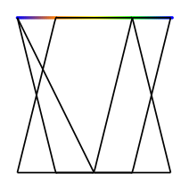
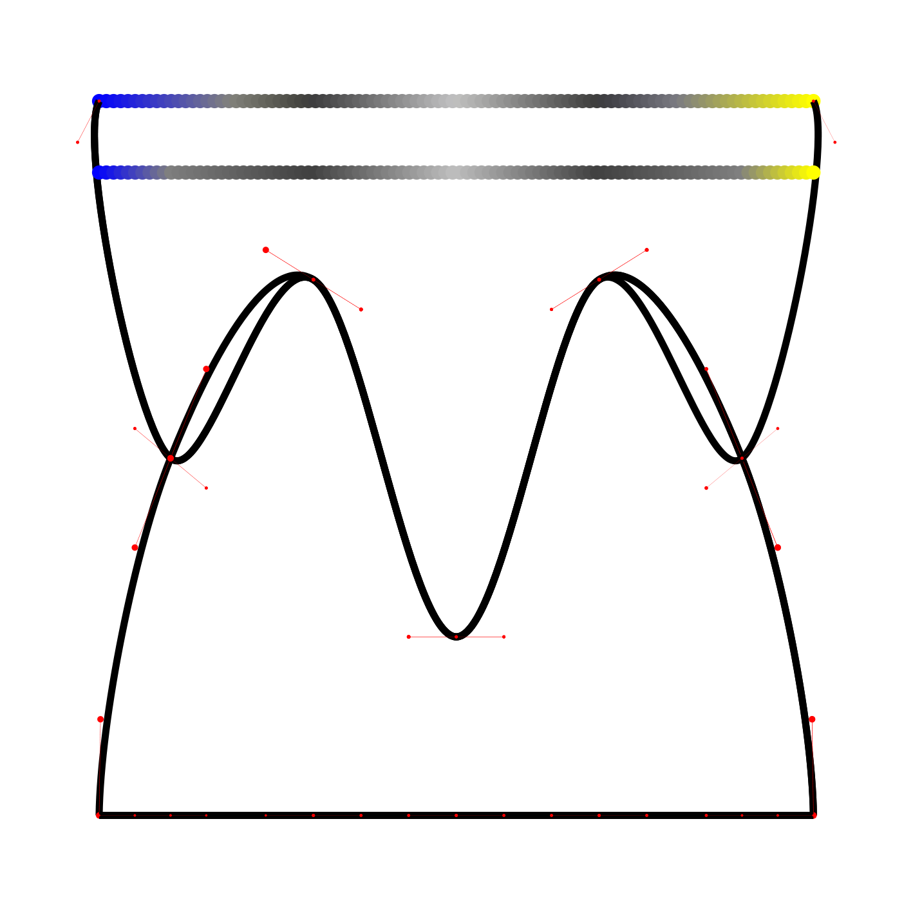

Interpolation is the reverse operation of sampling. From a list of objects of same dimension D, it must build an object of dimension D+1.
Point interpolation => linear or bezier curve
|
 |
require 'xrvg' include XRVG render = SVGRender[:imagesize, "3cm" ] palette = Palette[ :colorlist, [ 0.0, Color.blue, 0.25, Color.orange, 0.5, Color.yellow, 0.75, Color.green, 1.0, Color.blue], :interpoltype, :linear] style = Style[ :fill, Color.black ] line = Line[ :points, [V2D::O, V2D::X] ] SyncS[line, palette].samples( 100 ) do |point, color| style.fill = color render.add( Circle[:center, point, :radius, 0.01 ], style) end curves = [] palette.interpolators.each do |interpol| points = [] interpol.samples( 100 ).each_with_index do |y, index| points << V2D[ index.to_f/100.0, y ] end curves << SimpleBezier[ :support, points ] end curves.each do |curve| render.add( curve, Style[ :stroke, Color.black, :strokewidth, 0.01 ] ) end render.end |
|
 |
require 'xrvg' include XRVG render = SVGRender[:imagesize, "20cm" ] palette = Palette[ :colorlist, [ 0.0, Color.blue, 0.1, Color.grey(0.5), 0.3, Color.grey(0.25), 0.5, Color.grey(0.75), 0.7, Color.grey(0.25), 0.9, Color.grey(0.5), 1.0, Color.yellow], :interpoltype, :simplebezier] style = Style[ :fill, Color.black ] line = Line[ :points, [V2D::O, V2D::X] ] SyncS[line, palette].samples( 100 ) do |point, color| style.fill = color render.add( Circle[:center, point, :radius, 0.01 ], style) end curves = [] palette.interpolators.each do |interpol| curves << interpol.getcurve end curves.each do |curve| render.add( curve, Style[ :stroke, Color.black, :strokewidth, 0.01 ] ) curve.gdebug( render ) end line = Line[ :points, [V2D::O, V2D::X] ].translate( V2D::Y * 0.1 ) palette.interpoltype = :linear SyncS[line, palette].samples( 100 ) do |point, color| style.fill = color render.add( Circle[:center, point, :radius, 0.01 ], style) end render.end |